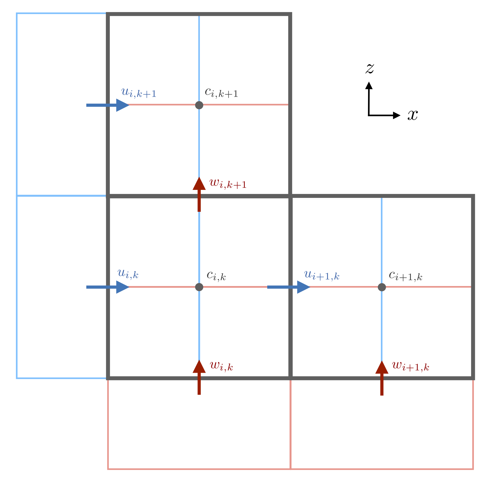

Finite volume method on a staggered grid
The Oceananigans.jl staggered grid is defined by a rectilinear array of cuboids of horizontal dimensions $\Delta x_{i, j, k}, \Delta y_{i, j, k}$ and vertical dimension $\Delta z_{i, j, k}$, where $(i, j, k)$ index the location of each cell in the staggered grid. Note that the indices $(i, j, k)$ increase with increasing coordinate $(x, y, z)$.
 A schematic of \texttt{Oceananigans.jl} finite volumes for a two-dimensional staggered grid in $(x, z)$. Tracers $c$ and pressure $p$ are defined at the center of the control volume. The $u$ control volumes are centered on the left and right edges of the pressure control volume while the $w$ control volumes are centered on the top and bottom edges of the pressure control volumes. The indexing convention places the $i^{\rm{th}}$ $u$-node on cell $x$-faces to the left of the $i$ tracer point at cell centers.
Dropping explicit indexing, the areas of cell faces are given by
\[ A_x = \Delta y \Delta z, \quad A_y = \Delta x \Delta z, \quad A_z = \Delta x \Delta y \, ,\]
so that each cell encloses a volume $V = \Delta x \Delta y \Delta z$.
A finite volume method discretizes a continuous quantity $c$ by considering its average over a finite volume:
\[ c_{i, j, k} \equiv \frac{1}{V_{i, j, k}} \int c(\boldsymbol{x}) \, \mathrm{d} V_{i, j, k} \, .\]
The finite volumes that discretize each of $u$, $v$, and $w$ are located on a grid which is "staggered" with respect to the grid that defines tracer finite volumes. The nodes, or central points of the velocity finite volumes are co-located with the faces of the tracer finite volume. In particular, the $u$-nodes are located in the center of the "$x$-face" (east of the tracer point), $v$-nodes are located on $y$-faces south of the tracer point, and $w$-nodes are located on $z$-faces downwards from the tracer point.